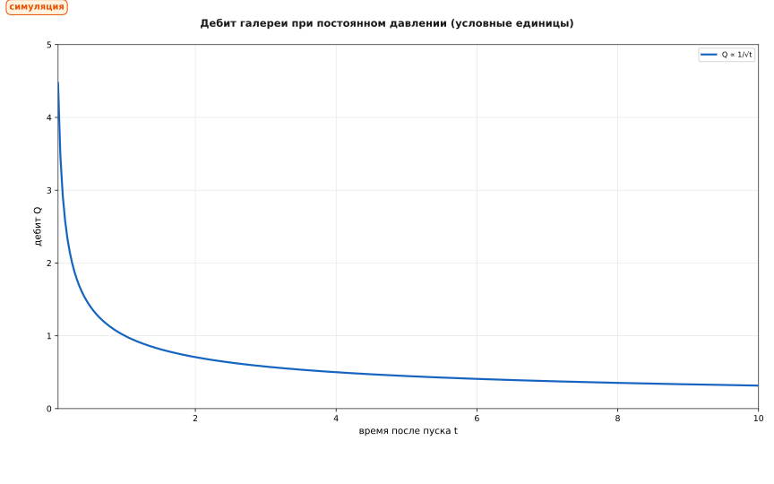

Путь › Как управление галереей меняет давление и отбор › Шаг 22 из 60
Как градиент превращается в дебит
В книге: «Прямолинейно-параллельный фильтрационный поток упругой жидкости» стр. 484–485
Опирается на: шаг 21 «От интеграла к давлению в пласте» (предпосылка), шаг 9 «Из чего складывается модель течения» (предпосылка), шаг 23 «От дебита к добытому объёму» (переход к данным)
Суть
Дебит галереи определяется градиентом давления у неё по закону Дарси.
При постоянном давлении на галерее дебит убывает обратно пропорционально корню из времени.
Бесконечный дебит в момент пуска — следствие мгновенного скачка давления в модели.
Пороговая идея. Постоянное давление на галерее даёт переменный дебит. модель
Как это работает
Знак и направление
Дебит, отбираемый из галереи, считают положительным. стр. 484
«Будем считать положительным дебит, отбираемый из галереи ($x = 0$), когда поток движется против оси $x$ и $\partial p / \partial x > 0$.»
При положительном градиенте поток идёт к галерее. Это против положительного направления оси. стр. 484
«Будем считать положительным дебит, отбираемый из галереи ($x = 0$), когда поток движется против оси $x$ и $\partial p / \partial x > 0$.»
Закон Дарси у галереи
По закону Дарси скорость отбора пропорциональна градиенту давления на галерее — изменению давления на единицу длины. стр. 484
«$$w = \frac{k}{\mu} \left(\frac{\partial p}{\partial x}\right)_{x=0}, \quad Q = \frac{k}{\mu} Bh \left(\frac{\partial p}{\partial x}\right)_{x=0}, \quad (23.28)$$»
Чтобы получить объёмный дебит, скорость умножают на ширину и толщину пласта. стр. 484
«$$w = \frac{k}{\mu} \left(\frac{\partial p}{\partial x}\right)_{x=0}, \quad Q = \frac{k}{\mu} Bh \left(\frac{\partial p}{\partial x}\right)_{x=0}, \quad (23.28)$$»
Ширину пласта обозначают B, толщину — h. стр. 484
«где $B, h$ – соответственно, ширина и толщина пласта.»
Градиент у галереи равен перепаду давления, делённому на корень из произведения пи, пьезопроводности и времени. стр. 484
«$$\left(\frac{\partial p}{\partial x}\right)_{x=0} = (p_{\mathrm{k}} - p_{\mathrm{r}}) \left(\frac{2}{\sqrt{\pi}} e^{-\left(\frac{x}{2\sqrt{\kappa t}}\right)^2} \frac{1}{2\sqrt{\kappa t}}\right)_{x=0} = \frac{p_{\mathrm{k}} - p_{\mathrm{r}}}{\sqrt{\pi \kappa t}}. \quad (23.29)$$»
Дебит находят подстановкой этого градиента в выражение Дарси. стр. 484
«Дебит галереи в любой момент времени найдем, подставив значение градиента давления $\partial p / \partial x$ из (23.29) в выражение (23.28),»
Как ведёт себя дебит
Дебит пропорционален перепаду давления, проницаемости и сечению. Вязкость и корень из времени стоят в знаменателе. стр. 484
«$$Q = \frac{k}{\mu} \frac{p_{\mathrm{k}} - p_{\mathrm{r}}}{\sqrt{\pi \kappa t}} Bh. \quad (23.30)$$»
Поэтому дебит убывает обратно пропорционально корню из времени. стр. 485
«Из формулы (23.30) следует, что дебит галереи убывает с течением времени, как $1/\sqrt{t}$, и при $t \to \infty$ стремится к нулю.»

При больших временах дебит стремится к нулю. стр. 485
«Из формулы (23.30) следует, что дебит галереи убывает с течением времени, как $1/\sqrt{t}$, и при $t \to \infty$ стремится к нулю.»
В момент пуска формула даёт бесконечный дебит. стр. 485
«В момент времени $t = 0$ формула (23.30) дает бесконечное значение дебита, и это обстоятельство является следствием скачка давления на галерее (от $p_к$ до $p_г$) в начальный момент времени.»
Это следствие постановки: давление на галерее меняется скачком. стр. 485
«В момент времени $t = 0$ формула (23.30) дает бесконечное значение дебита, и это обстоятельство является следствием скачка давления на галерее (от $p_к$ до $p_г$) в начальный момент времени.»
По шагам
Как найти дебит галереи
- Продифференцируйте профиль давления по расстоянию. стр. 484
- Вычислите градиент у галереи. стр. 484
- Умножьте его на k/μ и площадь сечения B·h. стр. 484
Формулы
Закон Дарси у галереи: скорость и объёмный дебит. стр. 484
| Обозначение | Что это | Единицы |
|---|---|---|
| $w$ | скорость фильтрации, положительная к галерее | м/с |
| $k$ | проницаемость пласта | м² |
| $\mu$ | динамическая вязкость жидкости | Па·с |
| $p$ | давление жидкости в пласте | Па |
| $x$ | расстояние от галереи | м |
| $Q$ | объёмный дебит галереи | м³/с |
| $B$ | ширина пласта | м |
| $h$ | толщина пласта | м |
Градиент давления на галерее после дифференцирования профиля. стр. 484
| Обозначение | Что это | Единицы |
|---|---|---|
| $p$ | давление жидкости в пласте | Па |
| $x$ | расстояние от галереи | м |
| $p_{\mathrm{k}}$ | начальное и контурное давление | Па |
| $p_{\mathrm{r}}$ | давление галереи | Па |
| $\pi$ | число пи | безразмерно |
| $\kappa$ | коэффициент пьезопроводности | м²/с |
| $t$ | время от пуска | с |
| $e$ | основание натурального логарифма | безразмерно |
Дебит галереи с постоянным давлением. стр. 484
| Обозначение | Что это | Единицы |
|---|---|---|
| $Q$ | объёмный дебит галереи | м³/с |
| $k$ | проницаемость пласта | м² |
| $\mu$ | динамическая вязкость жидкости | Па·с |
| $p_{\mathrm{k}}$ | начальное и контурное давление | Па |
| $p_{\mathrm{r}}$ | давление галереи | Па |
| $\pi$ | число пи | безразмерно |
| $\kappa$ | коэффициент пьезопроводности | м²/с |
| $t$ | время от пуска | с |
| $B$ | ширина пласта | м |
| $h$ | толщина пласта | м |
Частая ошибка модель
Ошибка: Если давление на галерее постоянно, дебит тоже постоянен.
На самом деле: При неизменном давлении у галереи её дебит убывает, поскольку с течением времени уменьшается градиент. стр. 484–485
Что это значит для данных
В режиме заданного давления дебит — выход модели, а не вход.
- Вход
- Перепад давлений, проницаемость, вязкость, пьезопроводность, ширина и толщина, время от пуска.
- Выход
- Дебит во времени и градиент у галереи.
- Где ломается
- На самом пуске формула даёт расходящийся предел из-за скачка.
Где здесь ручной труд специалиста
- Входные данные
- Перепад давлений, проницаемость, вязкость, пьезопроводность, ширина и толщина, время от пуска.
- Ручные шаги
- Согласовать время от пуска, перепад и площадь сечения перед расчётом.
- Точки суждения
- На ранних точках отличить ограничение модели от ошибки замера.
- Время
- Наибольшая ручная работа — проверка режима и времени пуска.
- Типичные ошибки
- Интерпретировать расчётную бесконечность как реальный расход.
Аналогия модель
Градиент и проводимость похожи на разность потенциалов и проводимость при расчёте тока.
Где аналогия перестаёт работать: Здесь локальный градиент меняется сам по себе, даже когда давления на краях заданы постоянно.
Новые понятия
- Галерея (gallery)
- Линейная выработка, через которую в этой задаче отбирают жидкость из пласта. модель
- Дебит (volumetric flow rate)
- Объём жидкости, отбираемый за единицу времени. модель
- Градиент давления (pressure gradient)
- В одномерной задаче — производная давления по расстоянию, то есть изменение давления на единицу длины. модель
- Закон Дарси (Darcy’s law)
- Связывает скорость фильтрации с градиентом давления, проницаемостью и вязкостью; знак зависит от направления отсчёта. модель
- Пьезопроводность (hydraulic diffusivity)
- Способность среды передавать изменения давления диффузионным образом; коэффициент имеет размерность площади, делённой на время. модель
- Проницаемость (permeability)
- Свойство пористой среды пропускать жидкость под действием перепада давления. модель
- Скорость фильтрации (Darcy velocity)
- Отношение объёмного расхода к полной площади поперечного сечения среды. модель
Проверь себя
Расставьте шаги расчёта дебита по порядку.
Перетащите пункты (мышью или пальцем за ⠿) или двигайте кнопками ↑ ↓.
- Умножьте его на k/μ и площадь сечения B·h.
- Продифференцируйте профиль давления по расстоянию.
- Вычислите градиент у галереи.
Верный ответ: Продифференцируйте профиль давления по расстоянию. → Вычислите градиент у галереи. → Умножьте его на k/μ и площадь сечения B·h.
Сначала градиент, затем закон Дарси и сечение. Где это в тексте (стр. 484) →
Заполните пропуск.
Дебит убывает обратно пропорционально корню из .
Верный ответ: Дебит убывает обратно пропорционально корню из [времени].
Корень из времени стоит в знаменателе формулы дебита. Где это в тексте (стр. 485) →
Верный ответ: Потому что давление на галерее в модели меняется скачком
Автор связывает расходимость со способом задания пуска. Где это в тексте (стр. 485) →
Источник
Все утверждения шага с дословной цитатой автора и страницей книги (по PDF).
Отбираемый из галереи дебит считают положительным. допущение
«Будем считать положительным дебит, отбираемый из галереи ($x = 0$), когда поток движется против оси $x$ и $\partial p / \partial x > 0$.»
При положительном градиенте поток идёт к галерее, против положительного направления оси. вывод
«Будем считать положительным дебит, отбираемый из галереи ($x = 0$), когда поток движется против оси $x$ и $\partial p / \partial x > 0$.»
Скорость отбора по Дарси пропорциональна градиенту давления на галерее. вывод
«$$w = \frac{k}{\mu} \left(\frac{\partial p}{\partial x}\right)_{x=0}, \quad Q = \frac{k}{\mu} Bh \left(\frac{\partial p}{\partial x}\right)_{x=0}, \quad (23.28)$$»
Чтобы получить объёмный дебит, скорость умножают на ширину и толщину пласта. вывод
«$$w = \frac{k}{\mu} \left(\frac{\partial p}{\partial x}\right)_{x=0}, \quad Q = \frac{k}{\mu} Bh \left(\frac{\partial p}{\partial x}\right)_{x=0}, \quad (23.28)$$»
Множители B и h обозначают соответственно ширину и толщину пласта. наблюдение
«где $B, h$ – соответственно, ширина и толщина пласта.»
Градиент у галереи равен перепаду, делённому на корень из произведения пи, пьезопроводности и времени. вывод
«$$\left(\frac{\partial p}{\partial x}\right)_{x=0} = (p_{\mathrm{k}} - p_{\mathrm{r}}) \left(\frac{2}{\sqrt{\pi}} e^{-\left(\frac{x}{2\sqrt{\kappa t}}\right)^2} \frac{1}{2\sqrt{\kappa t}}\right)_{x=0} = \frac{p_{\mathrm{k}} - p_{\mathrm{r}}}{\sqrt{\pi \kappa t}}. \quad (23.29)$$»
Дебит вычисляют подстановкой градиента давления в выражение Дарси. вывод
«Дебит галереи в любой момент времени найдем, подставив значение градиента давления $\partial p / \partial x$ из (23.29) в выражение (23.28),»
Дебит пропорционален перепаду давления, проницаемости и сечению, а вязкость и корень из времени стоят в знаменателе. вывод
«$$Q = \frac{k}{\mu} \frac{p_{\mathrm{k}} - p_{\mathrm{r}}}{\sqrt{\pi \kappa t}} Bh. \quad (23.30)$$»
Дебит убывает обратно пропорционально корню из времени. вывод
«Из формулы (23.30) следует, что дебит галереи убывает с течением времени, как $1/\sqrt{t}$, и при $t \to \infty$ стремится к нулю.»
При больших временах дебит стремится к нулю. вывод
«Из формулы (23.30) следует, что дебит галереи убывает с течением времени, как $1/\sqrt{t}$, и при $t \to \infty$ стремится к нулю.»
Формула предсказывает расходимость дебита в момент пуска. вывод
«В момент времени $t = 0$ формула (23.30) дает бесконечное значение дебита, и это обстоятельство является следствием скачка давления на галерее (от $p_к$ до $p_г$) в начальный момент времени.»
Расходимость обусловлена способом задания пуска: давление на галерее меняется скачком. вывод
«В момент времени $t = 0$ формула (23.30) дает бесконечное значение дебита, и это обстоятельство является следствием скачка давления на галерее (от $p_к$ до $p_г$) в начальный момент времени.»
На этот шаг опираются: шаг 23 «От дебита к добытому объёму», шаг 24 «Пуск галереи с постоянным дебитом», шаг 32 «Свернуть расстояние и время в одну координату», шаг 39 «Расход и скорость вокруг скважины», шаг 53 «Профиль, дебит и точность при постоянной депрессии».